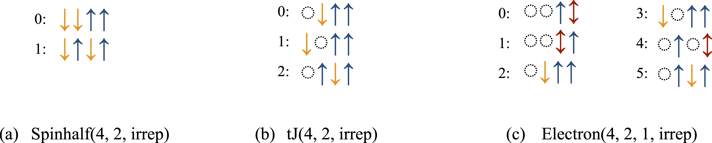

Symmetries
Symmetries are fundamental properties of any physical systems. In quantum mechanics, symmetries of a Hamiltonian lead to a set of conserved quantities, also referred to as quantum numbers. Mathematically, quantum numbers are irreducible representations of symmetry groups. A particularly important set of symmetries are space group symmetries like translation symmetries in a solid or point group symmetries in molecules. Abstractly, these symmetries are permutations of sites of the interaction graph. Permutation groups then have irreducible representations, which can denote the momentum for translation groups or angular momentum in point groups. XDiag features functionality to efficiently employ these symmetries to allow for more efficient computation but also physical insights, by e.g., allowing for tower-of-states analysis (see e.g. Wietek et al. (2017)).
Permutations
Mathematically, a permutation \(\pi\) of order \(n\) is a bijective mapping, $$ \pi : \{ 1, 2, \ldots, N\} \rightarrow \{ 1, 2, \ldots, N\},$$ where every integer in the range from \(1\) to \(N\) is mapped to a distinct number from \(1\) to \(N\). Such a mapping is usually written as, $$ \pi = \begin{pmatrix} 1 & 2& \ldots & N \\ \pi(1) & \pi(2) & \ldots & \pi(N) \\ \end{pmatrix} $$ For example, a translation operator \(T\) on a chain with periodic boundary conditions with \(N=8\) sites can be written as, $$ T = \begin{pmatrix} 1 & 2& \ldots & N-1 & N \\ 2 & 3& \ldots & N & 1 \\ \end{pmatrix} $$ In XDiag, such a mapping is represented by a Permutation object, which is created by the integer vector of permuted indices.
Notice, that also here we start counting from 1 in Julia, and from 0 in C++. Permutation objects can be multiplied (i.e. concatenated), inverted, and raised to a power. A set of permutations can form a mathematical group. To define a mathematical permutation group, we can construct a PermutationGroup object by handing a vector of Permutation objects.
Internally, the group axioms are validated, and an error will be thrown if not all group properties are fulfilled. This means that the existence of the identity permutation is required. Every permutation also necessitates its inverse to be present, and the product of two permutations needs to be defined as well.
Representations
Mathematically, a representation \(\rho\) of a group \(G\) is a mapping from a group to the group of invertible matrices \(\textrm{GL}(V)\) on a vector space \(V\), $$ \rho: G \mapsto \textrm{GL}(V), $$ fulfilling the group homomorphism property, $$ \rho(g \cdot h) = \rho(g) \cdot \rho(h) \quad \textrm{for all} \quad g, h \in G. $$ The dimension of \(V\), i.e. the dimension of the matrices is referred to as the dimension of the representation. The character \(\chi_\rho\) of a representation \(\rho\) is denotes the trace of the representation matrices, $$ \chi_\rho(g) = \textrm{Tr}[\rho(g)] \in \mathbf{C}. $$ One-dimensional representations play an important role in the theory of space groups. We identify the representation matrices of one-dimensional representations with their characters.
An important example is the cyclic group \(C_N\) of order \(N\) consisting of e.g. translations \(\{ \textrm{I}, T, T^2, \ldots, T^{(N-1)}\}\), which has \(N\) irreducible one-dimensional representations. Those, can be labeled by numbers \(2\pi k /N\), such that the characters are, $$ \chi_k(T^n) = e^{i k n}. $$ Hence, each irreducible representation (irrep) corresponds to a momentum in physical terms. In XDiag, a one-dimensional representation is represented by the Representation object and can be created by handing a PermutationGroup and the list of characters.
Upon creation of a representation, XDiag verifies whether the group axioms as well as the homomorphism property of the characters is fulfilled, i.e., $$ f * g=h \Rightarrow \chi(f) \cdot \chi(g)=\chi(h). $$
Symmetry-adapted blocks
Representations \(\rho\) of a permutation symmetry group \(G\) can then be used to create symmetry-adapted blocks. Given a computational basis state \(|\mathbf{\sigma}\rangle = |\sigma_1\sigma_2\cdots\sigma_N\rangle\), the corresponding symmetry-adapted state is given as, $$ |\mathbf{\sigma}{\rho}\rangle \equiv \frac{1}{N(g)^{}} \sum_{g \in G} \chi_{\rho} g |\mathbf{\sigma}\rangle. $$ Here, the action of a permutation \(g\) on a product state \(|\sigma\rangle\) is defined as, $$ g|\mathbf{\sigma}\rangle = g|\sigma_1\sigma_2\cdots\sigma_N\rangle = |\sigma_{g(1)}\sigma_{g(2)}\cdots\sigma_{g(N)}\rangle, $$ and the \(N_{\rho,\psi}\) denotes the normalization constant. For example, consider a spin \(S=1/2\) system on a four-site chain with a fourfold translation symmetry group \(C_4\), the computational basis state \(|\mathbf{\sigma}\rangle = |\downarrow\downarrow\uparrow\uparrow\rangle\) and the irreducible representation with \(k=\pi\). Then the symmetry-adapted basis state of \(|\mathbf{\sigma}\rangle\) is given as, $$ |\mathbf{\sigma}_\pi\rangle = \frac{1}{2}\left( |\downarrow\downarrow\uparrow\uparrow\rangle -|\downarrow\uparrow\uparrow\downarrow\rangle +|\uparrow\uparrow\downarrow\downarrow\rangle -|\uparrow\downarrow\downarrow\uparrow\rangle \right) $$ We refer to the states \(\{g|\mathbf{\sigma}\rangle \; | \; g \in G\}\) as the orbit of \(|\mathbf{\sigma}\rangle\). XDiag represents each basis state by an integer value. To represent a symmetry-adapted basis state, XDiag uses the state in the orbit of \(|\mathbf{\sigma}\rangle\) with the minimal associated integer value, which is then called the representative* of the orbit. For more details on symmetry-adapted wavefunctions in the context of exact diagonalization we refer to Ref. Weiße and Fehske (2008) or Wietek (2022).
We can conveniently create a symmetry-adapted block in XDiag by handing a Representation object to the constructor of a block.
A symmetry-adapted block shares most functionality with conventional blocks. We can iterate over the basis states, i.e. the representatives of the symmetry-adapted basis states.
A sample output of symmetry-adapted blocks of different kinds is shown in the figure below. Symmetry-adapted blocks can, among other use cases, be used to create a representation of an operator in the symmetry-adapted basis using the matrix function and to create symmetric states by constructing State objects. Also symmetry-adapted operators, e.g. created using symmetrize as described in the section Symmetrized operators, in the form of an OpSum can be applied to symmetry-adapted states, where consistency of quantum numbers is validated.

Reading symmetries from TOML files
Permutation groups and representations can be defined in a TOML file and read in. A typical input TOML file defining a symmetry group and corresponding representations is shown below.
# content of symmetries.toml
Symmetries = [
[0, 1, 2, 3],
[3, 0, 1, 2],
[2, 3, 0, 1],
[1, 2, 3, 0],
]
# Irreducible representations
[k.zero]
characters = [
[1.0, 0.0],
[1.0, 0.0],
[1.0, 0.0],
[1.0, 0.0],
]
[k.pihalf]
characters = [
[1.0, 0.0],
[0.0, 1.0],
[-1.0, 0.0],
[0.0, -1.0],
]
[k.pi]
characters = [
[1.0, 0.0],
[-1.0, 0.0],
[1.0, 0.0],
[-1.0, 0.0],
]
The permutation group is defined as an integer matrix, whose rows correspond to individual permutations. Notice, that we start counting sites from \(0\) in this case. This holds regardless of whether the C++ version or the Julia version is used. The input TOML files always start counting at \(0\), in Julia, the symmetry number array is increased by one. The representations are given names, "k.zero", "k.pihalf", "k.pi", and have an associated field characters, which is a vector of complex numbers. Complex numbers are represented by a two-element array. Technically, real representations are also allowed to have one single real number instead.
The symmetry group and the irreducible representations are then easily read in using the functions read_permutation_group and read_representation.
Notice that the read_representation function is not just handed the name of the representation but also the tag that defines the permutation symmetry group, as the representation needs to know which group it is representing.
Symmetrized operators
A useful feature to work with permutation symmetries is to symmetrize a non-symmetric operator. Symmetrization in this context means the following. In general, we are given an operator of the form, $$ O = \sum_{A\subseteq \mathcal{L}} O_A, $$ where \(O_A\) denotes a local operator acting on sites \(A=\{a_1, \ldots, a_{l_A}\}\) and \(\mathcal{L}\) denotes the lattice. A permutation group \(\mathcal{G}\) is defined through its permutations \(\pi_1, \ldots, \pi_M\). The symmetrized operator is then defined as, $$ O^\mathcal{G} = \frac{1}{M}\sum_{A\subseteq \mathcal{L}} \sum_{\pi \in \mathcal{G}} O_{\pi(A)}, $$ where \(\pi(A) = \{\pi(a_1), \ldots,\pi(a_{l_A})\}\) denotes the permutated set of sites of the local operator \(O_A\). Additionally, we can also symmetrize with respect to a representation \(\rho\), $$ O^\mathcal{G, \rho} = \frac{1}{M}\sum_{A\subseteq \mathcal{L}} \sum_{\pi \in \mathcal{G}} \chi_\rho(\pi) O_{\pi(A)}, $$ where \(\chi_\rho(\pi)\) denotes the characters of the representation \(\rho\). Such symmetrizations of OpSum objects can be performed using the symmetrize function.
A common use case of symmetrizing operators is to evaluate expectation values of non-symmetric operators on a symmetric State. For example we might be interested in the ground state of a model with translation symmetry and then evaluate two-point correlation functions. The ground state is then going to be defined on a symmetric block, but the two-point correlation function is not symmetric with respect to the translation symmetry group. However, the symmetrized two-point correlation function is, in fact, symmetric, and its expectation value on a symmetric state will evaluate to the same number. This is a typical use case of symmetrizing an operator with respect to a group.
Another use case of the symmetrize function is to create operators at a certain momentum, e.g. $$ S^z(\mathbf{q}) = \frac{1}{M} \sum e^{i\mathbf{q}\cdot\mathbf{r}} S^z_{\mathbf{r}}, $$ Notice that such an operator can be written as \(O^\mathcal{G, \rho}\) for an appropriate representation \(\rho\) of a lattice symmetry. Hence, it can be easily created using the symmetrize function with the irrep describing the momentum \(\mathbf{q}\). We provide several examples along XDiag demonstrating this functionality and use cases.